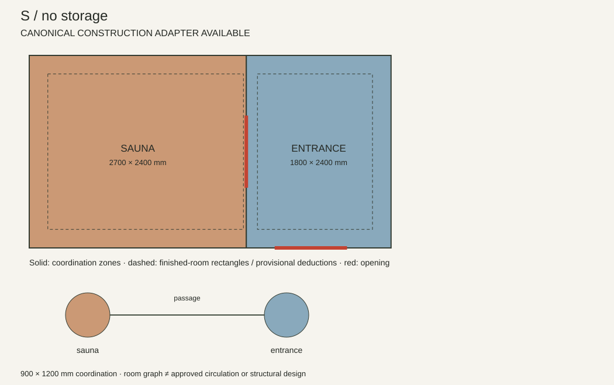
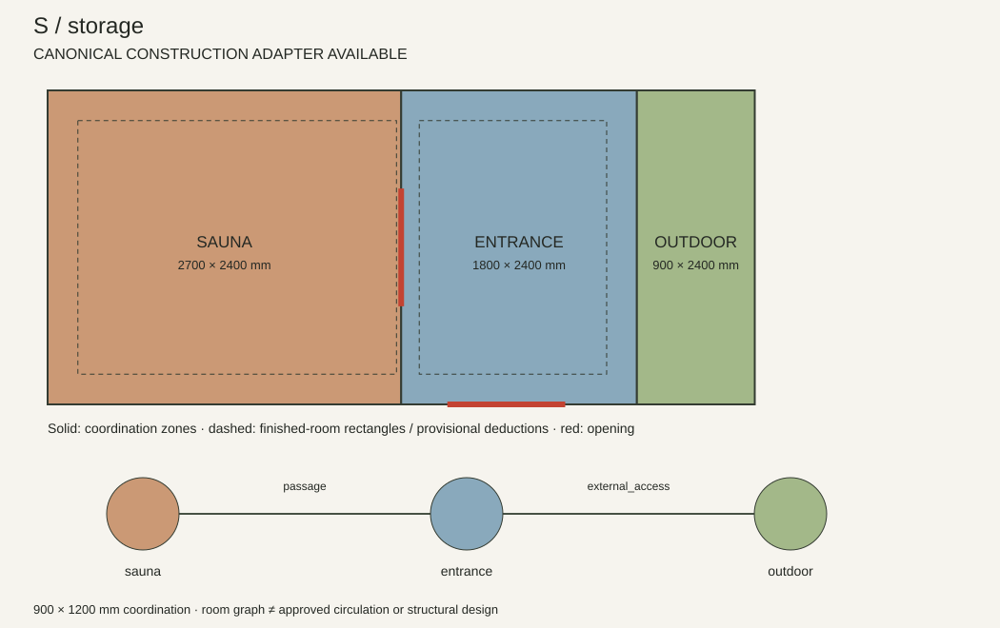
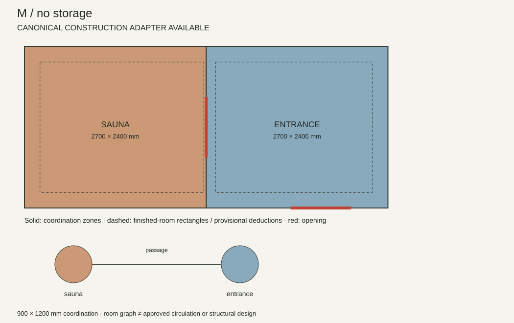
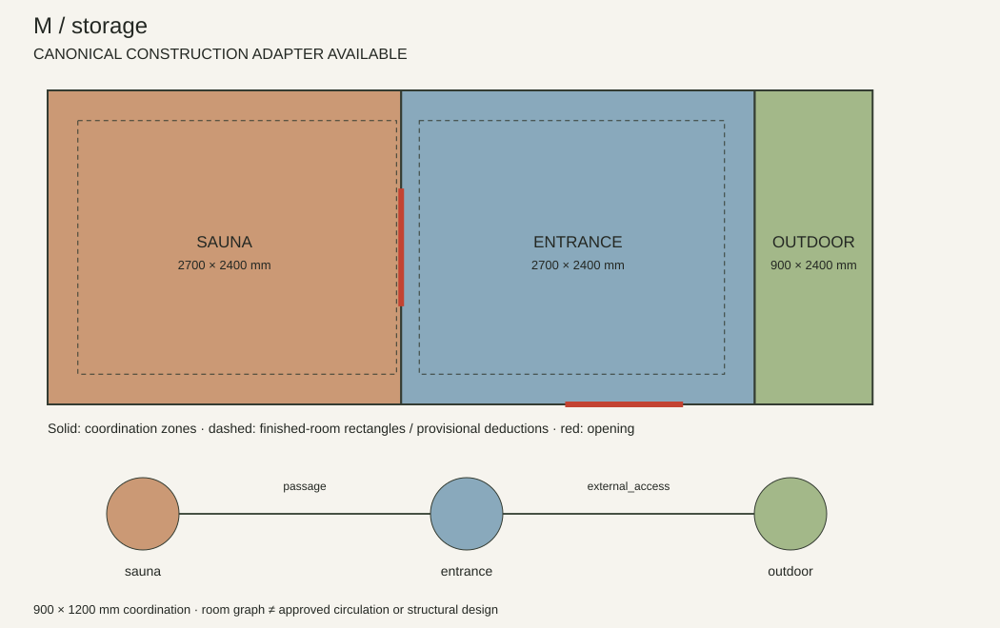
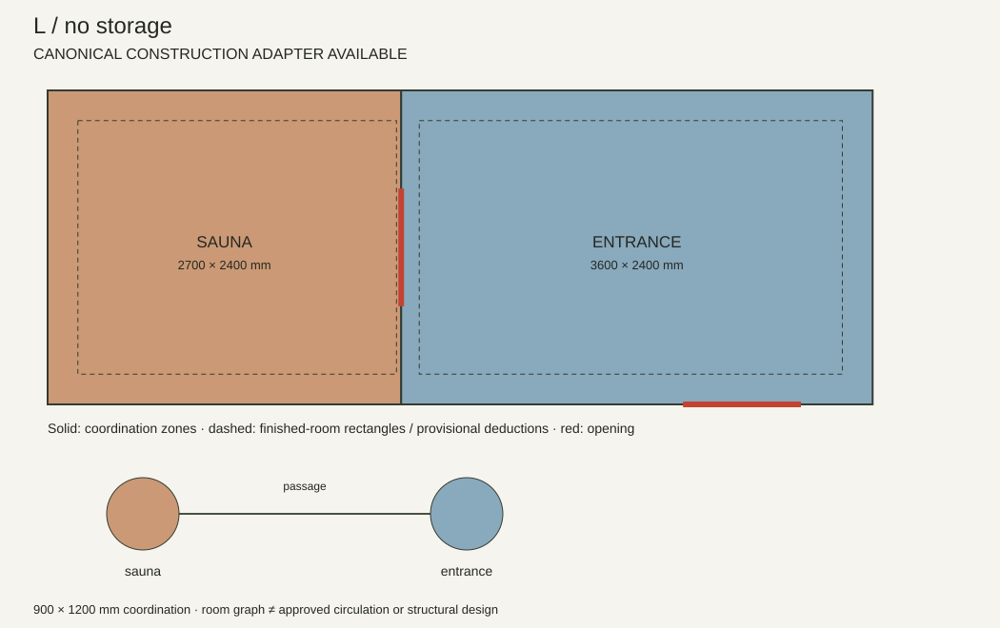
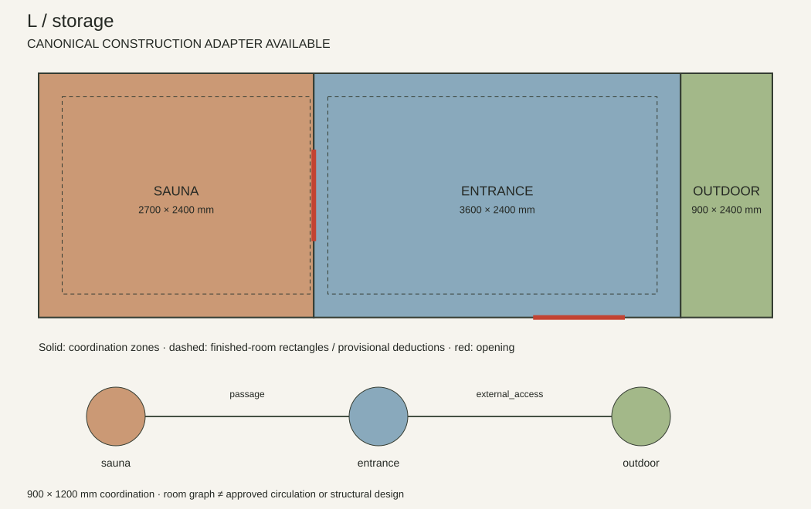
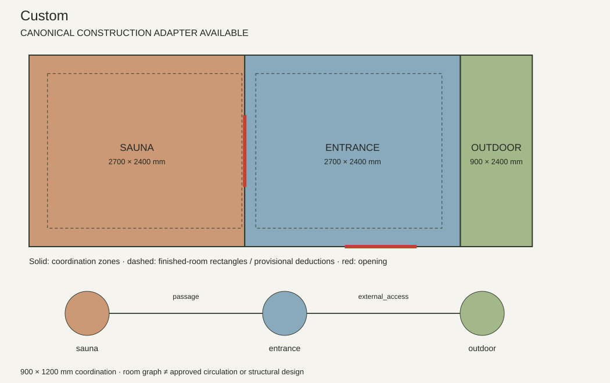

S / no storage

Preset → layout → cassette → 3D. 1321 modelled pieces including separately scheduled cladding.
Six saved presets and Custom. Saved presets ignore custom room controls. These are room-planning diagrams; detailed architectural drawings come from the resulting cassette scene. Original outdoor shower fixtures on saved no-storage models are retained outside the room zones.

Preset → layout → cassette → 3D. 1321 modelled pieces including separately scheduled cladding.

Preset → layout → cassette → 3D. 1700 modelled pieces including separately scheduled cladding.

Preset → layout → cassette → 3D. 1507 modelled pieces including separately scheduled cladding.

Preset → layout → cassette → 3D. 1861 modelled pieces including separately scheduled cladding.

Preset → layout → cassette → 3D. 1609 modelled pieces including separately scheduled cladding.

Preset → layout → cassette → 3D. 1992 modelled pieces including separately scheduled cladding.

Preset → layout → cassette → 3D. 1861 modelled pieces including separately scheduled cladding.